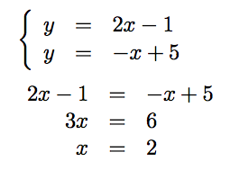

12. Skärningspunkter för linje och linje
Bestäm skärningspunkterna för \( y=2x-1 \) och \( y=-x+5 \).
För att hitta skärningspunkten bildar vi ett ekvationssystem.
\( \left\{ \begin{array}{rcl} y & = & 2x-1 \\ y & = & -x+5 \\ \end{array} \right. \)
Vi löser ekvationssystem antingen genom additionsmetoden eller substitutionsmetoden.
| Additionsmetoden | Substitutionsmetoden |
|---|---|
 |  |
| \( y=-x+5 \) ger att \( x=-y+5 = -3+5 =2 \). | Och \( y \) får vi via \( y=-x+5 = -2+5= 3 \). |
Skärningspunkten är \( (2,3) \).
Det är ingen skillnad vilken metod man använder för att lösa ett ekvationssystem. Det som du skall se till är att du är bekant med bägge lösningsmetoder. Bägge har sina för och nackdelar och utgående från vad som man vill räkna lönar det sig att välja metod.
I fall där ekvationssystemet är en del av en större uppgift, tex inom fysik och kemi, lönar det sig att lösa ekvationssystemet på räknaren.
Lösning
\( \left\{ \begin{array}{rcl} y & = & x-2 \\ y & = & x+1 \\ \end{array} \right. \)
\( \begin{array}{rcl} x-2 & = & x+1 \\ 0x & = & 3\\ \end{array} \)
\( 0x=3 \) uppfylls aldrig. Linjerna saknar gemensamma punkter. Tittar vi närmare på linjerna märker vi att de har samma riktningskoefficient, så de är parallella.
Lösning
\( \left\{ \begin{array}{rcll} y & = & x-2 \\ 3y & = & 3x-6 & \mid /3\\ \end{array} \right. \)
alltså
\( \left\{ \begin{array}{rcll} y & = & x-2 \\ y & = & x-2 \\ \end{array} \right. \)
som ger
\( \begin{array}{rcl} \hline 0 & = & 0 \\ \end{array} \) \( 0=0 \) uppfylls alltid så \( x\in \mathbb{R} \) och \( y=x-2 \) uppfyller ekvationen.
Vi har oändligt med rötter.
\( \left\{ \begin{array}{rcll} 2a + b - c & = & -1 \\ a +5b+2c & = & 0\\ a+b+c & = & 2 \\ \end{array} \right. \)
Lösning
Vi börjar med att namnge raderna.
\( \left\{ \begin{array}{rcll} 2a + b - c & = & -1 & (1.)\\ a +5b+2c & = & 0 & (2.)\\ a+b+c & = & 2 & (3.)\\ \end{array} \right. \)
Vi kombinerar (1.) och (3.) och får:
\( \left\{ \begin{array}{rcl} 2a+b-c & = & -1 \\ a+b+c & = & 2 \\ \end{array} \right. \)
som blir
\( \begin{array}{rcll} \hline 3a+2b & = & 1 & (4.) \\ \end{array} \)
När vi multiplicerar (3.) med -2 och kombinerar (2.) och (3.) får vi
\( \left\{ \begin{array}{rcl} a+5b+2c & = & 0 \\ -2a-2b-2c & = & -4 \\ \end{array} \right. \)
\( \begin{array}{rcll} -a+3b=-4 & (5.) \\ \end{array} \)
Vi kombinerar (4.) och (5.).
\( \left\{ \begin{array}{rcll} 3a+2b & = & 1 \\ -a+3b & = & -4 & \mid \cdot 3\\ \end{array} \right. \)
\( \left\{ \begin{array}{rcl} 3a+2b & = & 1 \\ -3a+9b & = & -12 \\ \end{array} \right. \)
\( \begin{array}{rcl} \hline 11b & = & -11 \\ b & = & -1 \\ \end{array} \)
Från raden där vi kombinerar (1.) och (2.) får vi att \( 3a=1-2b \) så att \( a=\dfrac{1-2b}{3}=\dfrac{1-2(-1)}{3}=1 \). Och \( c \) får vi lätt från \( a+b+c=2 \) så att \( c=2-a-b=2-1-(-1)=2 \).
Vi har alltså \( a=1 \), \( b=-1 \) och \( c=2 \).
Lösning
Vi bildar ett ekvationssystem, \( k \) för kor, \( h \) för hönor. Vi vet att \( k+h=50 \) och att \( 4k+2h=150 \). Vi ställer upp det som ett ekvationssystem.
\( \left\{ \begin{array}{rcll} k+h & = & 50 & \mid \cdot (-2)\\ 4k+2h & = & 150 \\ \end{array} \right. \)
\( \begin{array}{rcl} \hline 2k & = & 50 \\ k & = & 25 \\ \end{array} \)
Antalet hönor från vi via \( k+h=50 \), \( h=50-k = 50 - 25 = 25 \).
Antal kor är 25 st och hönor 25 st.
Uppgifter
- Hur skiljer sig additionsmetoden från substitutionsmetoden? Vilka fördelar har bägge lösningsmetoder?
Additionsmetoden grundar sig på att man adderar ihop ekvationerna så att man klarar av att eliminera en variabel.
I substitionsmetoden så sätter vi in den ena ekvationen in i den andra.
Subsitutionsmetoden är bra då man tex skall hitta skärningspunter för funktioner. Additionsmetoden används i de datorprogrammen som löser ekvationer.
- Bestäm skärningspunkterna för linjerna genom att utnyttja dig av additionsmetoden eller substitutionsmetoden.
- \( y=3x-1 \) och \( y=-x+3 \).
Eftersom vi har \( y = \ldots \) och \( y = \ldots \) lönar det sig att jobba med substitutionsmetoden.
Vi får att \( 3x-1=-x+3 \). Jobba vidare från det.
Skärningspunkten är (1,2).
- \( y=3x-1 \) och \( y=2x-2 \).
Eftersom vi har \( y = \ldots \) och \( y = \ldots \) lönar det sig att jobba med substitutionsmetoden.
Vi får att \( 3x-1=-2x-2 \). Jobba vidare från det.
Skärningspunkten är (-1,-4).
- \( 2y=x+4 \) och \( y=-x-1 \).
Här har vi \( x \) och \( -x \). Använder vi oss av additionsmetoden blir vi kvitt \( x \):na.
Vi får att \( 3y=3 \). Jobba vidare från det.
Skärningspunkten är (-2,1).
- \( y=3x-1 \) och \( y=-x+3 \).
- Bestäm skärningspunkterna för linjerna.
- \( -3x+y+1 =0 \) och \( x+y+1=0 \).
Genom att uttrycka bägge ekvationer som \( y=\ldots \) får vi \( y=3x-1 \) och \( y=-x-1 \). Via substitutionsmetoden kommer vi lätt åt skärningspunkten (0,-1).
- \( y=-x+3 \) och \( 2x+2y -4= 0 \).
Genom subsitution får vi \( 2x+2(-x+3)=0 \). Arbetar vi från det får vi att dessa ekvationer saknar skärningspunkt. Linjerna är parallella. (Samma kan vi konstatera genom att skriva bägge ekvationer som \( y=\ldots \).)
- \( -2x+y+1=0 \) och \( y=5 \).
Substitutionsmetoden ger \( -2x+5+1=0 \). Då vi jobbar vidare från det får vi skärningspunkten (3,5).
- \( -3x+y+1 =0 \) och \( x+y+1=0 \).
- Biljettpriset för en vuxen var 5 € för vuxna och 2 € för barn till en konsert. Totalt var det 68 personer på plats och biljettintäkterna var 226 €. Hur många barn och vuxna var det på konserten?
Då \( a \) är antal barn och \( b \) är antal vuxna får vi ekvationerna att se ut som \( a+b=68 \) och \( 2a+5b=226 \).
Ekvationssystemet har lösningen \( a=38 \) och \( b=30 \).
- På en karta avgränsas en skog av \(x\)-axeln och linjerna \( y = \dfrac{4}{3}x + 8 \) och \( y = -2x+5 \). Bestäm arean av skogen då en ruta i koordinatsystemet motsvaras av 200 m. Svara som hektar.
Skärningsupunkten för linjerna är \( (-\dfrac{9}{10} , \dfrac{34}{5}) \). Se till att du löser detta.
Höjden av triangeln är \( \dfrac{34}{5} \).
Basens längd är avståndet mellan linjernas nollställen, \( -6 \) och \( \dfrac{5}{2} \). Längden är \( \dfrac{17}{2} \).
Eftersom \( 1 \text{ ha } = 100 \text{ m } \cdot 100 \text{ m } \) är arean direkt som ha \( A = \dfrac{1}{2}bh = \dfrac{1}{2} 2\cdot \dfrac{17}{2} \cdot 2 \cdot \dfrac{34}{5} = \dfrac{578}{5} = 115,6 \) ha.
Alltså 116 ha.
- Lös ekvationssystemet
\( \left\{ \begin{array}{rcl} \dfrac{a}{4} +\dfrac{b}{3} & = & 1 \\ \dfrac{a}{8} -\dfrac{b}{2} & = 1 \\ \end{array} \right. \)
Då vi fixar bort nämnarna får vi
\( \left\{ \begin{array}{rcl} 3a +4b & = & 12 \\ a -4b & = 8 \\ \end{array} \right. \).
Sedan får vi \( a= 5, b=-\dfrac{3}{4} \).
- Bestäm längden av sidorna för triangeln som bildas innanför linjerna \( y=-2x-2 \), \( y=\dfrac{1}{2}x+\dfrac{1}{2} \) och \( y=2 \).
Situationen är följande

Skärningspunkterna är \( (-2,2) \), \( (3,2) \) och \( (-1,0) \).
Då vi bestämmer avståndet mellan två punkter, \( \sqrt{(x_1-x_2)^2+(y_1-y_2)^2} \) så får vi avstånden \( \sqrt{5} \), \( 2\sqrt{5} \) och \( 5 \).
- För två telefonabonnemang gäller följande:
Abonnemang A Abonnemang B Grundpris per månad (€) 4,99 2,50 Pris per minut för samtal (€/min) 0,07 0,09 - Bilda funktioner som beskriver det total priset för abonnemang A och B då man talar \( x \) minuter.
För A: \( y=0,07x+4,99 \) och för B: \( y=0,09x+2,50 \).
- Vid vilken minutmängd är kostar det lika mycket att tala oberoende av abonnemang.
Lös ekvationssystemet av bägge ekvationerna. Vid 124,5 minuter.
- Hur mycket kostar det då?
13,70 €. Det värde som y får.
- Bilda funktioner som beskriver det total priset för abonnemang A och B då man talar \( x \) minuter.
\( \left\{ \begin{array}{rcl} 4x+2y+z & = & 1 \\ \dfrac{1}{3}x -\dfrac{2}{3}y+z & = & 0\\ 3x+2y+z & = & 0\\ \end{array} \right. \).
Lös ut från någon av ekvationerna, tex \( z \) och ersätt i de två andra \( z \) med det uttrycket. Vi får \( x=1 \), \( y=-1 \) och \( z=-1 \).
\( \left\{ \begin{array}{rcl} 3a & = & b+c \\ 2a-3b & = & -2-c \\ b-a & = & 1 \\ \end{array} \right. \)
Lös ut från någon av ekvationerna, tex \( b \) och ersätt i de två andra \( b \) med det uttrycket. Vi får \( a=2 \), \( b=3 \) och \( c=3 \).
- Bilda en funktion som med vars hjälp förvandlar temperaturen i Fahrenheit till en temperatur i Celcius.
Eftersom sambande är linjärt skall linjen gå genom punkterna \( (32,0) \) och \( (212,100) \).
Vi får följande ekvationer, \( 0 = k \cdot 32 + b \) och \( 100 = k \cdot 212 + b \).
Vi får lösningarna \( k = \dfrac{5}{9} \) och \( b = -\dfrac{160}{9} \).
Funktionen är \( f(x) = \dfrac{5}{9}x -\dfrac{160}{9} \).
- Ray Bradburys roman Fahrenheit 451 har fått sin titel efter pappers brännpunkt. Hur många grader Celcius är pappers brännpunkt?
Vi får
\( \dfrac{5}{9}\cdot 451 -\dfrac{160}{9} = 232,77\ldots \).
Alltså 233oC.
- Hur många Fahtenheit motsvaras av temperaturen -25oC?
Vi får ekvationen
\( \dfrac{5}{9}\cdot x -\dfrac{160}{9} = -25 \).
Alltså -13oF.
Ekvationssystemet är
\( \left\{ \begin{array}{rl} -1 = & a \cdot 2 +b \\ 5 = & a (-1) +b \\ \end{array} \right. \)
Ekvationerna har rötterna \( a=-2 \) och \( b=3 \).
\( \left\{ \begin{array}{rcl} y & = & x-1 \\ y & = & ax+a \\ \end{array} \right. \)
För att ekvationssystemet skall sakna lösningar skall linjerna vara parallella. Eftersom den ena linjen har riktningskoefficienten \( 1 \) så måste den andra linjen ha samma riktningskoefficent så att linjerna är parallella.
Vi namnger hörpunkterna med \( (x_1, y_1) \), \( (x_2, y_2) \) och \( (x_3, y_3) \).
För mittpunkter gäller \( (\dfrac{x_1+x_2}{2}, \dfrac{y_1+y_2}{2}) \)
Vi får ekvationerna \( \dfrac{x_1+x_2}{2}=0, \dfrac{x_2+x_3}{2}=-1 \ldots \) (totalt 6 st ekvationer.)
Då vi löser ekvationssystemet med alla ekvationer får vi punkterna \( (-3,4) \), \( (3,6) \) och \( (1,-2) \).